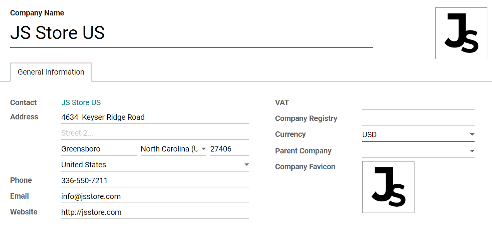

Companies¶
A centralized management environment allows you to select multiple companies simultaneously and set their specific warehouses, customers, equipment, and contacts. It provides you the ability to generate reports of aggregated figures without switching interfaces, which facilitates daily tasks and the overall management process.
Manage companies and records¶
Go to and fill in the form with your company’s information. If a Parent Company is selected, records are shared between the two companies (as long as both environments are active).
Tip
Activate the developer mode to choose a Favicon for each of your companies, and easily identify them by the browser tabs. Set your favicons’ files size to 16x16 or 32x32 pixels. JPG, PNG, GIF, and ICO are extensions accepted.

Switch between or select multiple companies by enabling their selection boxes to activate them. The grayed company is the one which environment is in use. To switch environments, click on the company’s name. In the example below, the user has access to three companies, two are activated, and the environment in use is of JS Store US.

Data such as Products, Contacts, and Equipment can be shared or set to be shown for a specific company only. To do so, on their forms, choose between:
A blank field: the record is shared within all companies.
Adding a company: the record is visible to users logged in to that specific company.

Employees’ access¶
Once companies are created, manage your employees’ Access Rights for Multi Companies.

The current company (the one active) or,
No company is set (on products and contacts’ forms for example) or,
The company set is the one linked to the document (the same as if a record is being edited).
Documents’ format¶
To set documents’ formats according to each company, activate and select the respective one and, under Settings, click on Configure Document Layout.

Inter-Company Transactions¶
First, make sure each one of your companies is properly set in relation to:
Now, activate the Inter-Company Transactions option under Settings. With the respective company activated and selected, choose if you would like operations between companies to be synchronized at an invoice/bills level or at a sales/purchase orders level.

Synchronize invoice/bills: generates a bill/invoice when a company confirms a bill/invoice for the selected company.
Example: an invoice posted on JS Store Belgium, for JS Store US, automatically creates a vendor bill on the JS Store US, from the JS Store Belgium.

Synchronize sales/purchase order: generates a drafted purchase/sales order using the selected company warehouse when a sales/purchase order is confirmed for the selected company. If instead of a drafted purchase/sales order you rather have it validated, enable Automatic Validation.
Example: when a sale order for JS Store US is confirmed on JS Store Belgium, a purchase order on JS Store Belgium is automatically created (and confirmed if the Automatic Validation feature was enabled).

Note
Products have to be configured as Can be sold and must be shared between the companies.
Tip
Remember to test all workflows as an user other than the administrator.
See also
Multi-company Guidelines